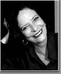

Heloisa Buarque, professora titular de teoria crítica da cultura da ECO/UFRJ, Coordenadora do Programa Avançado de Cultura Contemporânea da UFRJ, Diretora da Editora Aeroplano, atualmente colaboradora do JB. Escreveu e organizou mais de 10 livros sobre cultura e política, organizou duas antologias de poesia: a primeira "26 poetas hoje", de 1976, lançou os poetas marginais durante o período da ditadura militar, a segunda, "Esses Poetas" trouxe o retrato dos novos poetas dos anos 90. Escreveu roteiros para cinema, dirigiu documentários para cine e TV, dirigiu e apresentou um programa de rádio sobre literatura na rádio MEC, nos anos 80.
Há mais de vinte anos você lançava uma coletânea com os
poetas mais expressivos da geração mimeógrafo. Há menos de
um ano está nas livrarias uma outra coletânea com poetas
dos anos noventa. Quais as diferenças entre estas duas
gerações? Como foi o processo de seleção? Alguém ficou de
fora?
A diferença básica é a de que de uma explosão de paradigmas e modelos em direção à uma maior liberdade no uso da própria idéia de poesia, passamos, nos 90, à uma certa reconstrução do estatuto da poesia e do trabalho mais especificamente literário com a linguagem. para mim, os dois momentos são igualmente importantes e muito mais próximos entre si do que possa parecer à primeira vista. o processo de seleção do esses poetas foi bem difícil porque a quantidade de boa poesia que encontrei foi inesperada. diante disso, escolhi os trabalhos que me pareciam refletir de maneira mais direta a atmosfera cultural dos anos 90. muitos excelentes poetas ficaram de fora o que é o destino de qualquer antologia ou seleção (e também seu limite e sua graça).
Você ainda continua com a idéia de criar uma editora?
Eu já criei essa editora há mais de um ano: ela se chama
aeroplano, em homenagem ao poema de luiz aranha.
Aos poucos todos os poetas "fortes" estão entrando na
internet. O que a rede pode fazer pela poesia?
Tanto, que não dá ainda para prever. no momento, posso dizer que ela está abrindo canais de divulgação, que é um ponto terrível de estrangulamento de nossa produção poética.
Quais os sites mais interessantes da Internet?
Tenho mais de 2.500 selecionados, curtidos e comentados. Visite a biblioteca virtual de estudos culturais, link do site: www.ufrj.br/pacc
O que faz nas horas vagas?
Cozinho, nado, finjo que sou arquiteta e curto minha neta lindíssima que se chama Dora.
Qual o papel do escritor na sociedade?
Ser escritor